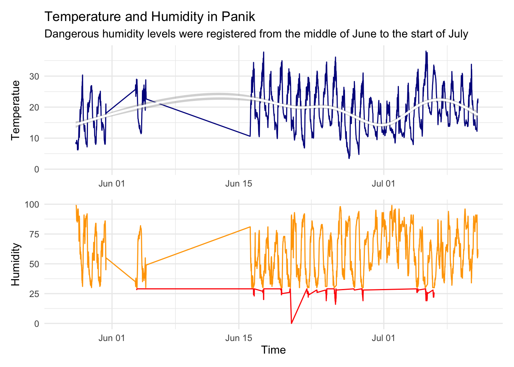
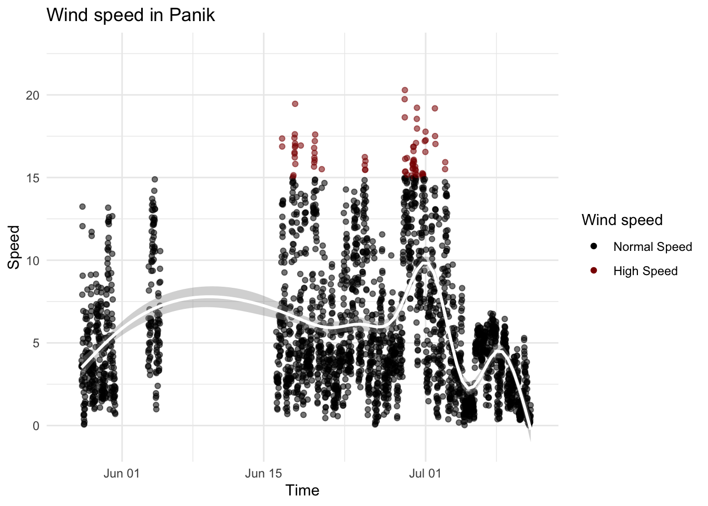
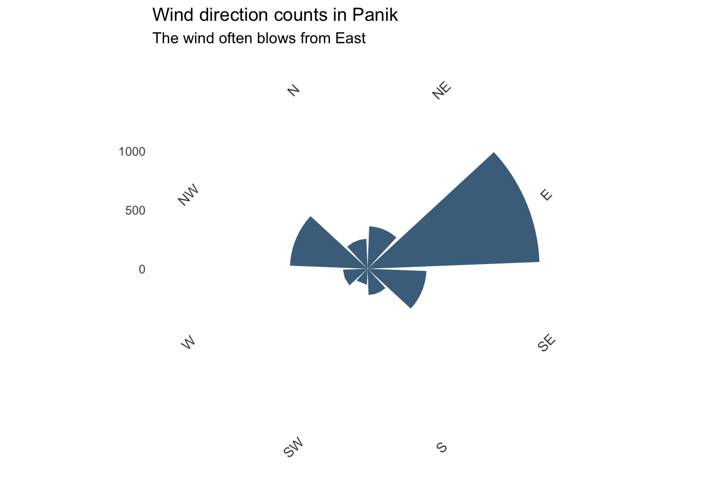

Panik
Panik s a village in the Artik Municipality of the Shirak Province of Armenia.
Fire causes and risk
Now we will explore the fire causes probability in Panik, going through data provided by Tumo Climate Net. The main climate features that can cause fire are temperature and humidity. The fire cause probability is higher when the temperature is high and humidity is low. The graph below represents the temperature and humidity flow during June-July 2024. As you can see, there is no information in the first half of June, because the device was broken. Dangerous humidity levels were registered from the middle of June to the start of July.
Humidity level is considered to be low when lower than 30 percents. The graph below represents the humidity level in Panik when the temperature is above 30 C (June-July 2024).
Predicting the spread of fire
We never know when and where will start the fire, so predicting the fire spreading speed and direction would be helpful to put it out. In the graph below you can see the wind speed during June-July 2024. The wind speed especially grows in the seccond half of June.

It is important to predict the direction of fire spread as well. Here is a chart representing the count of each of wind direction. As you can see, the wind often blows from East.

Conclusion of Panik area
According to the data we explored, Panik is not that hot and dry place, and fire cause probability is normal. The average temperature in Panik in June-July is about 18.6 C, and the average humidity is about 59.5%, which is considered normal.
Wind speed is not that high, and it usually blows from East, so the fire probably spreads to West.